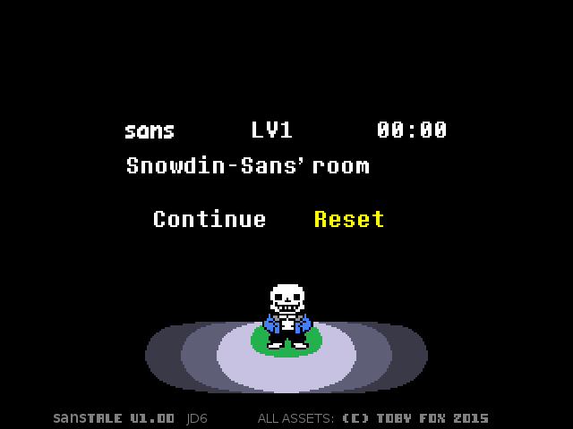
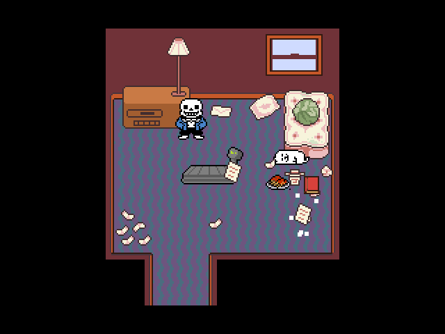
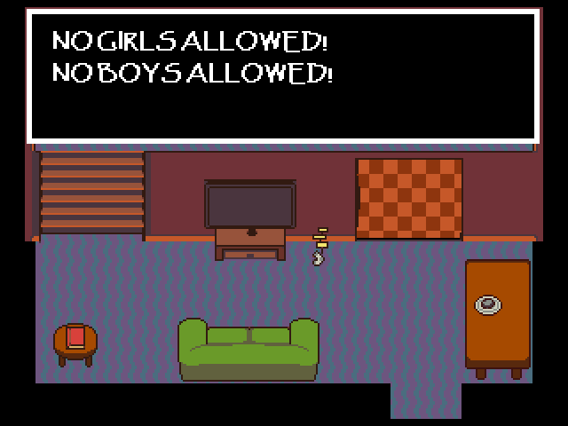
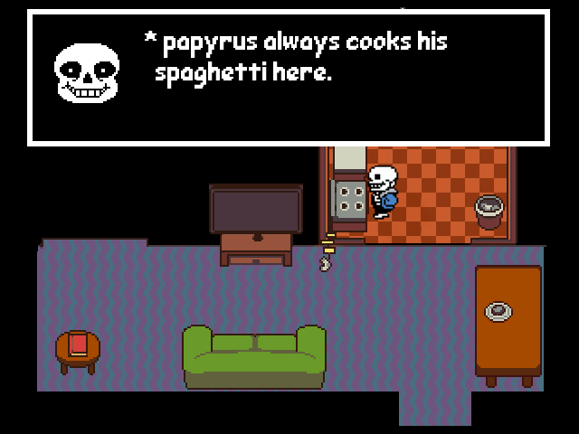

Undertale fangame written in love2d
(WARNING, THERE WILL BE SPOILERS, SO GO PLAY THE GAME IF YOU HAVEN’T ALREADY)
The source is currently not available, but I will open source it when the engine is at least a bit stable.
What is it about?
Undertale events but from sans' perspective.
How are you gonna recreate ‘x’ mechanic?
You'll see when it’s done
Can I see some previews?
Of course, here you are:




I do not own any of the assets used in this fangame nor I am affiliated with the Undertale team in any way, if toby fox wants me to take this down, I will.